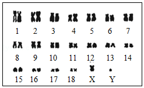

2020年北京市中考生物试题 · 选择题 第11、12、13、14、15题
11．（1分）鸟类的筑巢行为对繁殖后代具有重要意义。研究者对灰喜鹊的筑巢情况进行了调查，结果见下表。下列叙述错误的是（ ）
地点 | 青岛某居民区 | 北京某校园 | 小兴安岭林区 |
时间 | 3月下旬 | 4月中旬 | 4月下旬 |
高度 | 8m | 10m | 2m |
A．灰喜鹊的筑巢行为不受体内遗传物质控制
B．在三个地区筑巢时间的不同与气温等因素有关
C．小兴安岭林区内筑巢位置较低可能与人类活动较少有关
D．筑巢时间与高度的不同体现了灰喜鹊对环境的适应性
12．（1分）东北虎是我国一级保护动物。研究东北虎的遗传特性对其物种的延续具有重要意义。图示为某东北虎体细胞染色体组成，下列叙述错误的是（ ）

A．东北虎的染色体由蛋白质和DNA组成
B．东北虎体细胞内染色体数目为18对
C．据图判断该东北虎的性别为雄性
D．东北虎精子内性染色体为X或Y
13．（1分）新冠疫情期间，每个人都需要注重防护避免感染。下列措施不属于切断传播途径的是（ ）
A．测量体温B．酒精消毒C．佩戴口罩D．减少聚集
14．（1分）注射乙肝疫苗能够预防乙型肝炎。下列相关叙述错误的是（ ）
A．乙肝疫苗相当于抗原
B．机体可产生乙肝病毒抗体
C．能够引发特异性免疫反应
D．同时可以预防甲型肝炎
15．（1分）为快速获得一批保持母本优良性状的草莓苗以满足果农需求，下列技术中可选用的是（ ）
A．杂交技术B．发酵技术
C．转基因技术D．组织培养技术